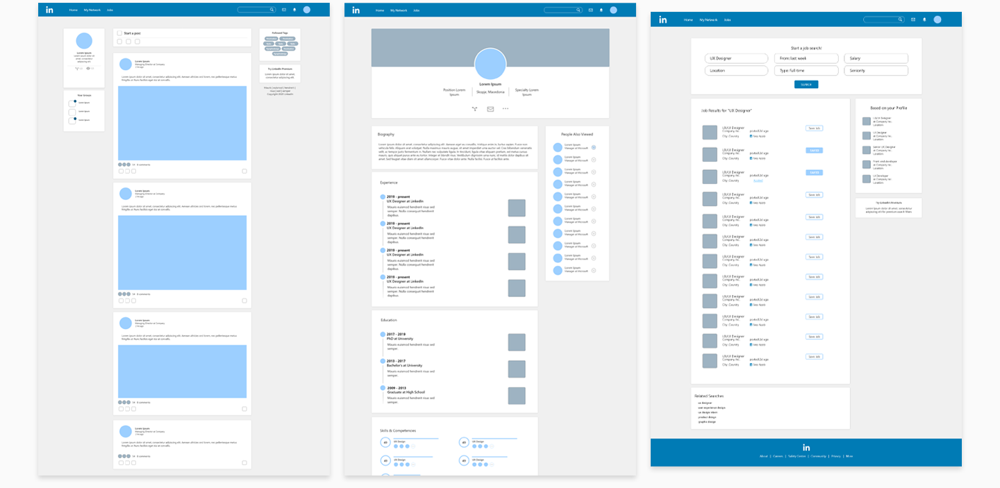
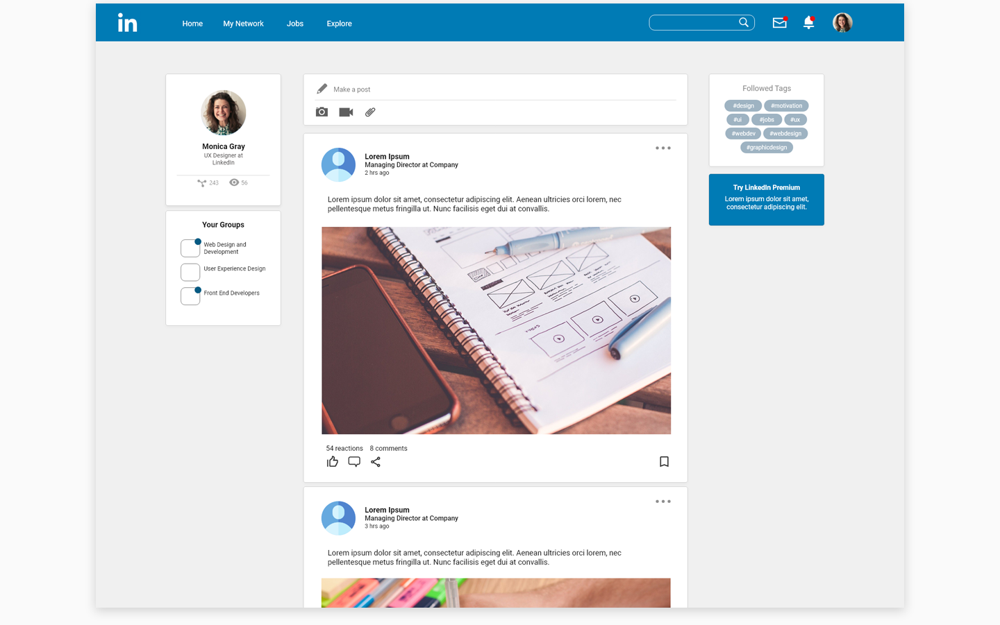
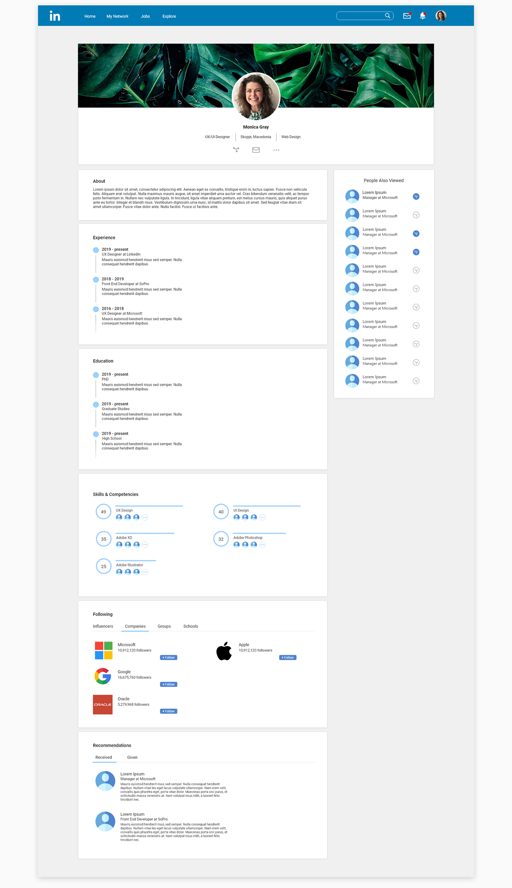
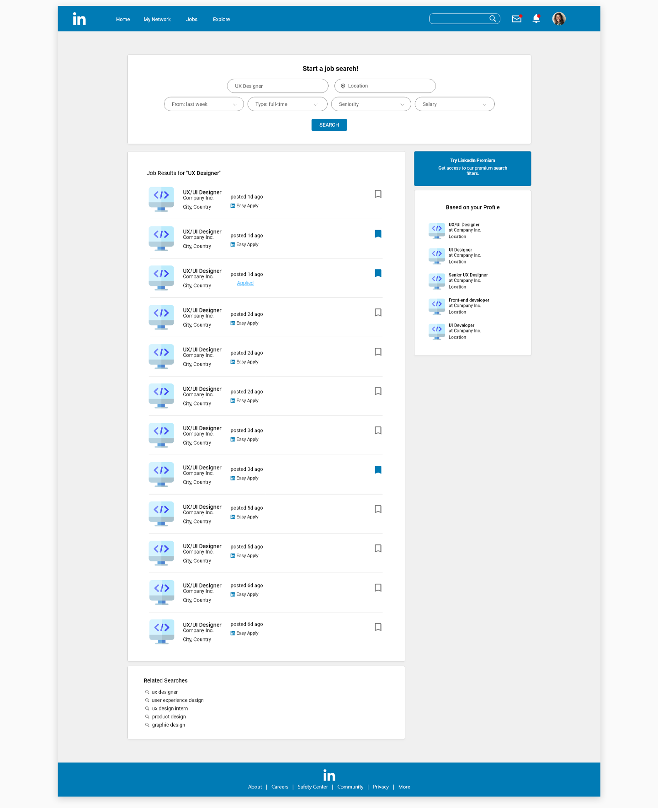

LinkedIn Redesign
Intro
Our assignment was to create our own redesign of LinkedIn and we were required to create new features, improve preexisting ones or think of new concepts that would be adequate for the website.
Approach
I approached this project by doing a lot of research on how regular users of LinkedIn feel about the website. I took in the most common feedback (website too noisy) and applied it to my redesign. For the most part I kept a lot of the preexisting functionalities on the website, I just cleaned it up a bit and made it easier for the user to navigate through.
Wireframes
The process
I found LinkedIn’s website to be quite hard to navigate, so my main goal was to make it cleaner, more personalized and to ease the process of looking for and applying for jobs: by offering more search filters, bookmark options, the ability to see what jobs you have applied for.
Homepage
Profile page
Search page
The messaging feature is the one that went through the most transformation. Considering the fact that people have professional conversations on LinkedIn, my main goal was to make the interface cleaner as to increase the readability and to assure a less cluttered space for users to communicate in.